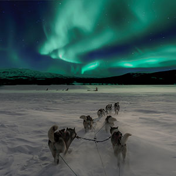

I am Mounia, I’m 21 years old and I am a Master Student at IESEG School of Management. I was born in Washington D.C, USA, I grew up in Rabat, Morocco where I graduated from a French school. I, then, pursued my studies in France. Being born and raised in different countries made me enjoy travelling, exploring and discovering new countries and cultures. Every trip is a new adventure!
See my LinkedIn profileSweden is a Scandinavian country located in North of Europe, it’s the 5th biggest country in Europe. The capital city is Stockholm and the main language is Swedish. I spent 6 months there in Västerås, located 40 minutes away from Stockholm. The life in Sweden is nice, even though it is a bit hard because of the cold weather and its geographical position. The days are short in winter, the sun sets down around 2:30 pm, while in summer the sun sets down around 11:30 pm and the days are longer than in any other place. Overall, going to Sweden has been an amazing experience. I got to travel all around Sweden, as well as its neighboring countries (Norway, Finland, Estonia). The best memory I have from there is without a question the Lapland trip. Lapland is a region located up north, between Sweden and Finland. This is where you get to see (if you’re lucky) the famous Northern lights. If you don’t get to see them, don’t worry there are many activities to do there, such as the Finnish sauna, reindeer and husky sledge, Santa Klaus village. 
Southeast Europe on the Adriatic and Ionian Sea within the Mediterranean Sea. It’s surrounded by North Macedonia, Montenegro, Kosovo and Greece. The official language is Albanian and the capital city is Tirana. It’s a great destination, not very popular even though it should be: the weather is great, the people are kind, the beaches and landscapes are amazing and the food is cheap and delicious! Also, if you’re planning a Europe trip, you can access its neighboring countries easily. When I was there, I made a trip to Greece with a travel agency: 4 days with transport, hotel, food and activities included for a total of 160€! If you have a valid driving licence you can also rent a car and go to Montenegro or North Macedonia in 2 hours!